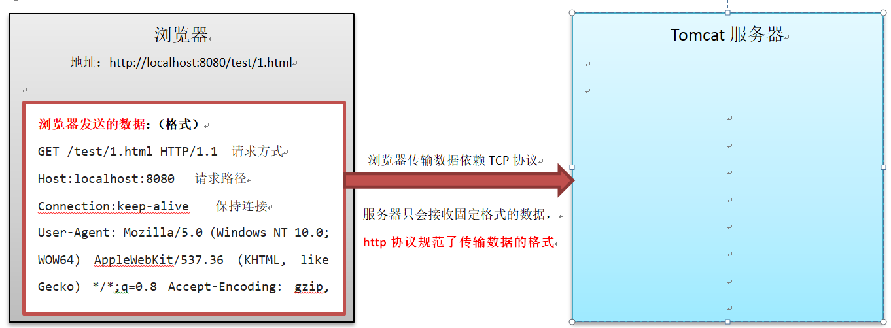

request
第1章 http协议
1.1 http协议的基本概念
1.1.1 http协议的简介
超文本传输协议（HTTP，HyperText Transfer Protocol)是互联网上应用最为广泛的一种网络协议。
所有的WWW文件都必须遵守这个标准。设计HTTP最初的目的是为了提供一种发布和接收HTML页面的方法。1960年美国人Ted Nelson构思了一种通过计算机处理文本信息的方法，并称之为超文本（hypertext）,这成为了HTTP超文本传输协议标准架构的发展根基。Ted Nelson组织协调万维网协会（World Wide Web Consortium）和互联网工程工作小组（Internet Engineering Task Force ）共同合作研究，最终发布了一系列的RFC，其中著名的RFC 2616定义了HTTP 1.1。
1.1.2 http协议的作用
互联网的数据传输底层依赖tcp协议，http协议架构在tcp协议之上，它规范了传输数据的内容和格式。

1.1.3 HTTP协议的应用场景
刷屏软件
刷屏软件的原理其实通过观察12306查阅剩余票数需要发出的参数，然后自己编程拼接服务器所需要的参数发给服务器，然后接受服务器的数据。如果需要查看12306发出的请求参数格式，那么就必须学习http协议。
智能家居
智能家居在我们的生活中的地位越来越重了，手机是如何操作我们的家庭设备的呢？其实也是手机软件通过拼接参数，然后然后发送给电话煲的，这个过程也是需要使用到http协议的。不管是刷屏软件还是智能家居都需要知道服务器要何种格式的数据，那么我们怎么才能知道呢？我们可以查看浏览器与服务器的通讯过程。
1.2 浏览器查看浏览器与服务器通讯过程
接下来我们准备开始学习HTTP协议的具体内容，既然要学习内容，必然要先能看的具体的内容，这就需要借助查看http协议内容的工具了，工具一般有两个：
1.2.1 chrome(谷歌)——按键f12：
1.2.2 firefox(火狐)——按键f12：
了解了如何使用工具查看http协议，那么接下来，我正式开始学习里面的内容：
1.3 请求信息的组成部分
学习http请求信息的组成，我们的目的是，了解浏览器将那些数据，按照什么样的格式发送给服务器。
http请求一共分为三个部分：请求行，请求头，请求体。接下来我们要看看具体的内容。
注：演示的时候，我们以谷歌浏览器为例。
1.3.1 http协议get请求方式：
创建一个工程day02，在web文件夹中准备一个1.html，内容为：
<form action="http://localhost:9090/day02/1.html" method="post"> <input type="text" name="username"><br> <input type="submit" value="提交"> </form>
启动服务器测试，访问1.html
1.3.2 http协议post请求方式：
http协议post请求方式，请求内容：
在观察到请求的三个部分之后，对于每一个部分我们再来详细的介绍。
1.3.3 请求行
请求行介绍
请求行：POST /day02/1.html HTTP/1.1
POST：请求方式
/day02/1.html：访问路径
HTTP/1.1 ：http协议的版本
问：get和post请求方式的区别？
答：
| get请求方式 | post请求方式 | |
|---|---|---|
| 数据长度是否有限制 | 是 | 否 |
| 是否包含请求体 | 否 | 是 |
| 数据是否暴露再地址栏 | 是 | 否 |
对于请求行的学习，同学们可以读懂请求行内容，和了解get和post请求方式的区别即可。
接下来我们再来学习第二个部分请求头的内容。
1.3.4 请求头
请求头内容：(了解)
Host: localhost:9090 （服务器的域名） Connection: keep-alive （网络连接是持久的） Content-Length: 12 （发送数据的大小，单位字节） Cache-Control: max-age=0 （设置缓存数据的存活时间，单位秒） Origin: http://localhost:9090 （指示了请求来自于哪个站点——服务器名称） Upgrade-Insecure-Requests: 1 （如果存在更安全的响应，客户端优先选择加密及带有身份验证的响应） Content-Type: application/x-www-form-urlencoded （发送数据的媒体类型——发挥作用类似后缀名：.mp3 .avi） User-Agent: Mozilla/5.0 (Windows NT 10.0; WOW64) AppleWebKit/537.36 (KHTML, like Gecko) Chrome/63.0.3239.132 Safari/537.36 （当前系统和浏览器版本） Accept: text/html,application/xhtml+xml,application/xml;q=0.9,image/webp,image/apng,*/*;q=0.8 Referer: http://localhost:9090/day01/1.html Accept-Encoding: gzip, deflate, br Accept-Language: zh-CN,zh;q=0.9 Cookie: JSESSIONID=98006861B5044ACC8D5C7840C93C17DA想要知道这些请求头是干什么的，可以使用火狐浏览器的功能，详细可以回看——浏览器查看浏览器与服务器通讯过程。
在这所有的请求头中，比较重要的有两个，这两个需要记住：
Referer: http://localhost:9090/day01/1.html 上一次请求的地址 User-Agent: Mozilla/5.0 (Windows NT 10.0; WOW64) AppleWebKit/537.36 (KHTML, like Gecko) Chrome/63.0.3239.132 Safari/537.36 当前用户的系统和浏览器版本。请求头中，同学们熟悉这两个即可。接下来最后就是请求体了。
1.3.5 请求体
请求体内容：
注意：get请求没有请求体，post请求有请求体
好到此为止，虽然我们了解了http协议请求相关的内容，但是，光了解不够，我们还需要可以在服务器获取这些数据，才能处理用户的请求，因此，接下来，我们需要学习和使用一个新的对象——Request。
第2章 request对象获取请求信息
2.1 request对象的基本概念
什么是HttpServletRequest？
HttpServletRequest对象代表客户端的请求，当客户端通过HTTP协议访问服务器时，HTTP请求中的所有信息都封装在这个对象中，开发人员通过这个对象的方法，可以获得客户这些信息。
以下是API文档中的介绍：
通过文档阅读可以注意到一个细节HttpServletReuqest不是相关请求的顶级接口，它继承自父接口——ServletRequest：
通过Request对象进行的常用操作:
获取客户机信息
获取请求头信息
获取请求参数
利用请求域传递对象
HttpServlet有许多的API我们从何学起？
答：我们按照学习http请求组成部分，按——请求行、请求头、请求体顺序学习。
2.2 request获取请求行信息
2.2.1 请求行的组成元素（通过request获取请求行数据）
在http协议中我已经看到了http协议中请求行的内容——分为请求方式、请求路径、协议版本。在HttpServletRequest概述中我们知道浏览器与请求相关的数据封装在request中，因此，接下来我们学习如何使用request对象获取请求行的数据。2.2.2 API介绍
String getMethod() 获取请求方式的类型String getRequestURI() 获取请求行中的资源名部分StringBuffer getRequestURL() 获取客户端发出请求完整URL 注： uri: 统一资源标识符,用来标识一个资源,资源路径。(相当于身份证) url: 统一资源定位符,是一种具体的URI,可以用来标识一个资源.并且指明了如何定位一个资源. （相当于身份证中的地址）String getProtocol() 获取当前协议的名称和版本String getRemoteAddr() 获取IP地址int getLocalPort() 获取端口
2.2.3 使用步骤
- 创建DemoServlet
- 在DemoServlet中的doGet或者doPost方法的参数列表，已经包含了request对象，调用方法即可。
- 将数据打印在控制台
2.2.4 演示代码
package cn.itcast.web;
import javax.servlet.ServletException;
import javax.servlet.annotation.WebServlet;
import javax.servlet.http.HttpServlet;
import javax.servlet.http.HttpServletRequest;
import javax.servlet.http.HttpServletResponse;
import java.io.IOException;
@WebServlet(name = "DemoServlet",urlPatterns = "/demo")
public class DemoServlet extends HttpServlet {
protected void doPost(HttpServletRequest request, HttpServletResponse response) throws ServletException, IOException {
doGet(request,response);
}
protected void doGet(HttpServletRequest request, HttpServletResponse response) throws ServletException, IOException {
/**
* 1. String getMethod()
获取请求方式的类型
* */
String method = request.getMethod();
System.out.println("获取请求方式的类型:"+method);
/**
* 2. String getRequestURI()
获取请求行中的资源名部分
* */
String requestURI = request.getRequestURI();
System.out.println("获取请求行中的资源名部分:"+requestURI);
/**
* 3. StringBuffer getRequestURL()
获取客户端发出请求完整URL
* */
StringBuffer getRequestURL = request.getRequestURL();
System.out.println("获取客户端发出请求完整URL:"+getRequestURL);
/**
* 4. String getProtocol()
获取当前协议的名称和版本
* */
String getProtocol = request.getProtocol();
System.out.println("获取当前协议的名称和版本:"+getProtocol);
/**
* 5. String getRemoteAddr()
获取IP地址
* */
String getRemoteAddr = request.getRemoteAddr();
System.out.println("获取IP地址:"+getRemoteAddr);
/**
* 6. int getLocalPort()
获取端口
* */
int localPort = request.getLocalPort();
System.out.println("获取端口:"+localPort);
}
}
效果一：测试地址——http://localhost:9090/day02/demo
获取请求方式的类型:GET
获取请求行中的资源名部分:/day02/demo
获取客户端发出请求完整URL:http://localhost:9090/day02/demo
获取当前协议的名称和版本:HTTP/1.1
获取IP地址:0:0:0:0:0:0:0:1
获取端口:9090
效果二：测试地址——http://127.0.0.1:9090/day02/demo
获取请求方式的类型:GET
获取请求行中的资源名部分:/day02/demo
获取客户端发出请求完整URL:http://127.0.0.1:9090/day02/demo
获取当前协议的名称和版本:HTTP/1.1
获取IP地址:127.0.0.1
获取端口:9090
问：为什么要测试两次？
答：同学们观察下两次打印的IP地址会发现不一样，因此，注意，Localhost和127.0.0.1效果一致，但是localhost默认使用ipv6本机地址——0:0:0:0:0:0:0:1，而127.0.0.1是ipv4的本机地址。
2.3 request获取请求头信息
2.3.1 获取请求头信息常用的方法
2.3.1.1 API介绍
String getHeader(String name) 以String 的形式返回指定请求头的值Enumeration getHeaderNames() 返回此请求包含的所有头名称的枚举
2.3.1.2 使用步骤
- 创建DemoServlet2
- 在DemoServlet2中的doGet或者doPost方法的参数列表，已经包含了request对象。因此，调用方法即可。
- 将结果打印在控制台
2.3.1.3 演示代码
package cn.itcast.web;
import javax.servlet.ServletException;
import javax.servlet.annotation.WebServlet;
import javax.servlet.http.HttpServlet;
import javax.servlet.http.HttpServletRequest;
import javax.servlet.http.HttpServletResponse;
import java.io.IOException;
import java.util.Enumeration;
@WebServlet(name = "DemoServlet2",urlPatterns = "/demo2")
public class DemoServlet2 extends HttpServlet {
protected void doPost(HttpServletRequest request, HttpServletResponse response) throws ServletException, IOException {
doGet(request,response);
}
protected void doGet(HttpServletRequest request, HttpServletResponse response) throws ServletException, IOException {
/**
* 1. String getHeader(String name)
以 String 的形式返回指定请求头的值
* */
String header = request.getHeader("User-Agent");
System.out.println("getHeader:"+header);
System.out.println();
/**
* 2. Enumeration getHeaderNames()
返回此请求包含的所有头名称的枚举
* */
Enumeration<String> headerNames = request.getHeaderNames();
while (headerNames.hasMoreElements()){
System.out.println("getHeaderNames:"+headerNames.nextElement());
}
}
}
效果：
getHeader:Mozilla/5.0 (Windows NT 10.0; WOW64) AppleWebKit/537.36 (KHTML, like Gecko) Chrome/63.0.3239.132 Safari/537.36
getHeaderNames:host
getHeaderNames:connection
getHeaderNames:cache-control
getHeaderNames:user-agent
getHeaderNames:upgrade-insecure-requests
getHeaderNames:accept
getHeaderNames:accept-encoding
getHeaderNames:accept-language
getHeaderNames:cookie
2.3.2 案例：使用referer实现防盗链
2.3.2.1 案例需求
问：什么是盗链？
答：如下图所示。
问：如何防止盗链？
答：在上图中用户一共发送两次请求，第一次访问正规服务器中的download.jsp页面，
第二次访问盗链者服务器中的download.jsp页面，二个download.jsp页面虽然内容相同，
但来源不相同。
如果download.jsp中的请求，来源于盗链者服务器，我们就显示不可以下载；
如果download.jsp中的请求，来源于正规服务器，我们就显示可以下载；
2.3.2.2 案例效果
两次请求同一个域名，显示可以下载
两次请求同不同域名，显示无法下载
2.3.2.3 案例分析
- 创建一个DownloadServlet。
- 使用request对象的getHeader方法获取referer请求头信息。
- 通过referer判断请求的来源地址，判断是否与当前项目统一。
2.3.2.4 实现步骤
servlet演示代码：
/** * 使用referer实现防盗链 * 用户->download.jsp->DownloadServlet */ @WebServlet(name = "DownloadServlet",urlPatterns = "/DownloadServlet") public class DownloadServlet extends HttpServlet { protected void doPost(HttpServletRequest request, HttpServletResponse response) throws ServletException, IOException { this.doGet(request,response); } protected void doGet(HttpServletRequest request, HttpServletResponse response) throws ServletException, IOException { //处理响应中文乱码-明天讲解 response.setContentType("text/html;charset=UTF-8"); //获取输出流 往页面上写内容-明天讲解 PrintWriter writer = response.getWriter(); //获取请求头referer String referer = request.getHeader("referer"); //如果请求头referer存在，且请求来源于正规服务器的download.jsp页面的话 if(referer != null && referer.equals("http://127.0.0.1:8080/day41/download.jsp")){ //没有盗链，在浏览器中显示可以下载 writer.write("可以下载"); }else{ //请求来源于盗链者服务器的download.jsp页面的话 writer.write("这是盗链，不可以下载"); } writer.flush(); writer.close(); } }
测试：
第一次访问正规服务器中的download.jsp页面，并发出下载请求，正规服务器中的DownloadServlet通过验证referer的来源是否合理，这次下载请求来源合理，所以显示“可以下载”。
测试：
第二次访问盗链者服务器中的download.jsp页面，并发出下载请求，
正规服务器中的DownloadServlet通过验证referer的来源是否合理，这次下载请求来源不合理，
所以显示“这是盗链，不可以下载”。
2.3.3 案例：获取用户当前使用的浏览器版本
2.3.3.1 案例需求
获取用户当前使用的浏览器版本
2.3.3.2 案例效果
2.3.3.3 案例分析
- 创建UserAgentServlet
- 调用request的getHeader方法，获取消息头User-Agent
- 打印在控制台上
2.3.3.4 实现步骤
- servlet演示代码：
package cn.itcast.web;
import javax.servlet.ServletException;
import javax.servlet.annotation.WebServlet;
import javax.servlet.http.HttpServlet;
import javax.servlet.http.HttpServletRequest;
import javax.servlet.http.HttpServletResponse;
import java.io.IOException;
@WebServlet(name = "UserAgentServlet",urlPatterns = "/userAgent")
public class UserAgentServlet extends HttpServlet {
protected void doPost(HttpServletRequest request, HttpServletResponse response) throws ServletException, IOException {
doGet(request, response);
}
protected void doGet(HttpServletRequest request, HttpServletResponse response) throws ServletException, IOException {
String header = request.getHeader("User-Agent");
System.out.println("当前用户浏览器相关信息："+header);
}
}
2.4 获取请求参数
学习完了对请求行和请求头的内容，最后一部分就是请求体了，在请求体中，包含的是用户通过浏览器发送的请求参数，因此，我们主要学习的就是获取请求参数的方法。
2.4.1 获取请求参数使用方法
2.4.1.1 API介绍
String getParameter(String name) 根据表单的name属性 获取对应的值String[] getParameterValues(String name) 获取name相同的所有value 例如复选框。Map getParameterMap() 参数名作为key，参数值作为value，封装到map中。
2.4.1.2 使用步骤
准备html页面：getParam.html
<!DOCTYPE html> <html lang="en"> <head> <meta charset="UTF-8"> <title>Title</title> </head> <body> <form action="/day02/getParam" method="post"> 用户名：<input type="text" name="username"><br> 爱 好：<input type="checkbox" name="hobby" value="football">足球 <input type="checkbox" name="hobby" value="basketball">篮球<br> <input type="submit" value="提交"> </form> </body> </html>
创建GetParameterServlet
再GetParameterServlet中的doGet和doPost方法的参数列表，已经包含了request对象，调用相应方法即可。
2.4.1.3 演示代码
package cn.itcast.web;
import javax.servlet.ServletException;
import javax.servlet.annotation.WebServlet;
import javax.servlet.http.HttpServlet;
import javax.servlet.http.HttpServletRequest;
import javax.servlet.http.HttpServletResponse;
import java.io.IOException;
import java.util.Map;
@WebServlet(name = "GetParameterServlet",urlPatterns = "/getParam")
public class GetParameterServlet extends HttpServlet {
protected void doPost(HttpServletRequest request, HttpServletResponse response) throws ServletException, IOException {
doGet(request,response);
}
protected void doGet(HttpServletRequest request, HttpServletResponse response) throws ServletException, IOException {
/**
* 1. String getParameter(String name)
根据表单的name属性 获取对应的值
* */
String username = request.getParameter("username");
System.out.println(username);
/**
* 2. String[] getParameterValues(String name)
获取name相同的所有value 例如复选框。
* */
String[] hobbies = request.getParameterValues("hobby");
for (String hobby : hobbies) {
System.out.println(hobby);
}
/**
* 3. Map getParameterMap()
参数名作为key，参数值作为value，封装到map中。
* */
Map<String, String[]> map = request.getParameterMap();
for (String key : map.keySet()) {
for (String s : map.get(key)) {
System.out.println(s);
}
}
}
}
2.4.2 乱码解决
2.4.2.1 请求参数乱码的由来
我们在输入一些中文数据提交给服务器的时候，服务器解析显示出来的一堆无意义的字符，就是乱码。
那么这个乱码是如何出现的呢？如下图所示：
有乱码那么必须处理乱码，不同的请求方式处理乱码操作不同。
2.4.2.2 API介绍
void setCharacterEncoding(String env) 设置请求体的编码
2.4.2.3 使用步骤
- 创建EncodingServlet
- 在EncodingServlet的doPost或者doGet方法中第一行，调用setCharacterEncoding方法设置编码
- 然后获取请求参数
2.4.2.4 注意事项
- 获取请求参数之后，调用setCharacterEncoding方法无效
2.4.2.5 演示代码
package cn.itcast.web;
import javax.servlet.ServletException;
import javax.servlet.annotation.WebServlet;
import javax.servlet.http.HttpServlet;
import javax.servlet.http.HttpServletRequest;
import javax.servlet.http.HttpServletResponse;
import java.io.IOException;
@WebServlet(name = "EncodingServlet",urlPatterns = "/encoding")
public class EncodingServlet extends HttpServlet {
protected void doPost(HttpServletRequest request, HttpServletResponse response) throws ServletException, IOException {
doGet(request, response);
}
protected void doGet(HttpServletRequest request, HttpServletResponse response) throws ServletException, IOException {
//处理post请求乱码
request.setCharacterEncoding("utf-8");
String username = request.getParameter("username");
System.out.println(username);
}
}
2.4.3 案例：使用BeanUtils封装表单提交的数据到javaBean对象中
2.4.3.1 案例需求
现在我们已经可以使用request对象来获取请求参数，但是，如果参数过多，我们就需要将数据封装到对象。
以前封装数据的时候，实体类有多少个字段，我们就需要手动编码调用多少次setXXX方法，因此，我们需要BeanUtils来解决这个问题。
2.4.3.2 案例效果
使用BeanUtils，完成数据的封装到实体类。
2.4.3.3 案例分析
- 设置一个登录页面准备提交表单数据（username、password）
- 导入BeanUtils相关jar包
- 创建Servlet获取请求参数
- 调用BeanUtils.populate方法封装数据
2.4.3.4 实现步骤
准备登录页面：
<!DOCTYPE html> <html lang="en"> <head> <meta charset="UTF-8"> <title>Title</title> </head> <body> <form action="/day02/login" method="post"> <table> <tr> <td>用户名</td> <td><input type="text" name="username"/></td> </tr> <tr> <td>密码</td> <td><input type="password" name="password"/></td> </tr> <tr> <td></td> <td><input type="submit" value="登录"/></td> </tr> </table> </form> </body> </html>
在web目录下创建WEB-INF\lib文件夹，导入BeanUtils相关jar包
commons-beanutils-1.8.3.jar commons-logging-1.1.1.jar
注意：导入完成还要关联jar包到项目
点击OK，完成关联。导入实体类User
package cn.itcast.domain; public class User { private int id; private String username; private String password; public int getId() { return id; } public void setId(int id) { this.id = id; } public String getUsername() { return username; } public void setUsername(String username) { this.username = username; } public String getPassword() { return password; } public void setPassword(String password) { this.password = password; } @Override public String toString() { return "User [id=" + id + ", username=" + username + ", password=" + password + "]"; } }
5. servlet代码：封装表单数据到User对象
```java
package cn.itcast.web;
import cn.itcast.domain.User;
import org.apache.commons.beanutils.BeanUtils;
import javax.servlet.ServletException;
import javax.servlet.annotation.WebServlet;
import javax.servlet.http.HttpServlet;
import javax.servlet.http.HttpServletRequest;
import javax.servlet.http.HttpServletResponse;
import java.io.IOException;
import java.lang.reflect.InvocationTargetException;
import java.util.Map;
@WebServlet(name = "LoginServlet",urlPatterns = "/login")
public class LoginServlet extends HttpServlet {
protected void doPost(HttpServletRequest request, HttpServletResponse response) throws ServletException, IOException {
doGet(request,response);
}
protected void doGet(HttpServletRequest request, HttpServletResponse response) throws ServletException, IOException {
//获取请求参数
Map<String, String[]> map = request.getParameterMap();
//创建要封装数据的对象
User user = new User();
//封装前打印一次数据
System.out.println(user);
try {
//封装数据
BeanUtils.populate(user, map);
} catch (Exception e) {
e.printStackTrace();
}
//封装后打印一次数据
System.out.println(user);
}
}
效果：
2.5 request的其他作用
2.5.1 获取项目路径
2.5.1.1 API介绍
String getContextPath() 获取项目路径
2.5.1.2 使用步骤
- 创建ContextPathServlet
- 直接通过request对象调用getContextPath方法获取项目路径
- 打印在控制台上
2.5.1.3 演示代码
package cn.itcast.web;
import javax.servlet.ServletException;
import javax.servlet.annotation.WebServlet;
import javax.servlet.http.HttpServlet;
import javax.servlet.http.HttpServletRequest;
import javax.servlet.http.HttpServletResponse;
import java.io.IOException;
@WebServlet(name = "ContextPathServlet",urlPatterns = "/context")
public class ContextPathServlet extends HttpServlet {
protected void doPost(HttpServletRequest request, HttpServletResponse response) throws ServletException, IOException {
doGet(request, response);
}
protected void doGet(HttpServletRequest request, HttpServletResponse response) throws ServletException, IOException {
//获取当前项目路径
String contextPath = request.getContextPath();
System.out.println(contextPath);
}
}
2.5.2 域对象
问：什么是域对象？
答：域对象是一个容器，这种容器主要用于servlet与servlet之间的数据传输使用的 .
今天讲解的request域对象,就可以在一次请求中的多个servlet之间进行数据共享.
2.5.2.1 域对象的API介绍
void setAttribute(String name, Object o) 设置数据到域中Object getAttribute(String name) 从域中获取数据void removeAttribute(String name) 从域中移除数据
2.5.2.2 request域对象的使用
- 创建ScopeServlet
- 调用request对象存（setAttribute）取（getAttribute）删（removeAttribute）方法
- 在保存和删除方法调用完成之后，都是的获取方法获取数据，打印在控制台上
2.5.2.3 注意事项
以上三个方法都是操作request中域对象的数据，与请求参数无关。
2.5.2.4 演示代码
package cn.itcast.web;
import javax.servlet.ServletException;
import javax.servlet.annotation.WebServlet;
import javax.servlet.http.HttpServlet;
import javax.servlet.http.HttpServletRequest;
import javax.servlet.http.HttpServletResponse;
import java.io.IOException;
@WebServlet(name = "ScopeServlet",urlPatterns = "/scope")
public class ScopeServlet extends HttpServlet {
protected void doPost(HttpServletRequest request, HttpServletResponse response) throws ServletException, IOException {
doGet(request, response);
}
protected void doGet(HttpServletRequest request, HttpServletResponse response) throws ServletException, IOException {
//存入数据
request.setAttribute("name","张三");
//获取数据
String name1 = (String) request.getAttribute("name");
System.out.println(name1);
//移除数据
request.removeAttribute("name");
String name2 = (String) request.getAttribute("name");
System.out.println(name2);
}
}
2.5.3 请求转发
2.5.3.1 什么是请求转发？
2.5.3.2 API介绍
RequestDispatcher getRequestDispatcher(String path) 获取请求转发器（request对象方法）void forward(ServletRequest request, ServletResponse response) 将请求转发到另一个资源（servlet）上（RequestDispatcher对象的方法）
2.5.3.3 使用步骤
- 先通过请求对象获取转发器
- 再调用转发器转发方法，转发请求
2.5.3.4 演示代码
DispatcherServlet：
package cn.itcast.web; import javax.servlet.ServletException; import javax.servlet.annotation.WebServlet; import javax.servlet.http.HttpServlet; import javax.servlet.http.HttpServletRequest; import javax.servlet.http.HttpServletResponse; import java.io.IOException; @WebServlet(name = "DispatcherServlet",urlPatterns = "/dispatcher") public class DispatcherServlet extends HttpServlet { protected void doPost(HttpServletRequest request, HttpServletResponse response) throws ServletException, IOException { doGet(request, response); } protected void doGet(HttpServletRequest request, HttpServletResponse response) throws ServletException, IOException { System.out.println("对用户请求第一次处理"); request.setAttribute("result","test_data"); request.getRequestDispatcher("/test").forward(request,response); } }
TestServlet:
package cn.itcast.web; import javax.servlet.ServletException; import javax.servlet.annotation.WebServlet; import javax.servlet.http.HttpServlet; import javax.servlet.http.HttpServletRequest; import javax.servlet.http.HttpServletResponse; import java.io.IOException; @WebServlet(name = "TestServlet",urlPatterns = "/test") public class TestServlet extends HttpServlet { protected void doPost(HttpServletRequest request, HttpServletResponse response) throws ServletException, IOException { doGet(request, response); } protected void doGet(HttpServletRequest request, HttpServletResponse response) throws ServletException, IOException { System.out.println("对用户请求第二次处理"); String result = (String) request.getAttribute("result"); response.getWriter().write(result); } }
2.5.4 案例： 实现登录功能
2.5.4.1 案例需求
实现用户登录功能。
2.5.4.2 案例效果
用户名和密码正确，显示登录成功
用户名和密码错误，显示登录失败
2.5.4.3 案例分析
- 设置一个登录页面准备提交表单数据（username、password）
- 导入相关jar包（BeanUtils、druid、mysql驱动、JDBCTempldate）
登录案例流程图：
2.5.4.4 实现步骤
准备登录页面：
<!DOCTYPE html> <html lang="en"> <head> <meta charset="UTF-8"> <title>Title</title> </head> <body> <form action="/day02/login" method="post"> <table> <tr> <td>用户名</td> <td><input type="text" name="username"/></td> </tr> <tr> <td>密码</td> <td><input type="password" name="password"/></td> </tr> <tr> <td></td> <td><input type="submit" value="登录"/></td> </tr> </table> </form> </body> </html>
在web目录下创建WEB-INF\lib文件夹，导入相关jar包（今天资料文件夹中有）
注意：导入完成还要关联jar包到项目
导入实体类User（今天资料文件夹中有）
package cn.itcast.domain; public class User { private int id; private String username; private String password; public int getId() { return id; } public void setId(int id) { this.id = id; } public String getUsername() { return username; } public void setUsername(String username) { this.username = username; } public String getPassword() { return password; } public void setPassword(String password) { this.password = password; } @Override public String toString() { return "User [id=" + id + ", username=" + username + ", password=" + password + "]"; } }
导入配置文件（druid-config.properties）和工具类（JDBCUtils）（今天资料文件夹中有）：
druid-config.properties:
driverClass:com.mysql.jdbc.Driver
jdbcUrl:jdbc:mysql:///day02
username:root
password:root
JDBCUtils:
package cn.itcast.utils; import com.alibaba.druid.pool.DruidDataSource; import javax.sql.DataSource; import java.sql.Connection; import java.sql.SQLException; import java.util.ResourceBundle; public class JDBCUtils { private static DruidDataSource dc = new DruidDataSource(); static { ResourceBundle bundle = ResourceBundle.getBundle("druid-config"); String driverClass = bundle.getString("driverClass"); String jdbcUrl = bundle.getString("jdbcUrl"); String username = bundle.getString("username"); String password = bundle.getString("password"); dc.setDriverClassName(driverClass); dc.setUrl(jdbcUrl); dc.setUsername(username); dc.setPassword(password); } public static Connection getConnection() throws SQLException { return dc.getConnection(); } public static DataSource getDataSource(){ return dc; } }
servlet代码：
package cn.itcast.web; import cn.itcast.dao.UserDao; import cn.itcast.domain.User; import org.apache.commons.beanutils.BeanUtils; import javax.servlet.ServletException; import javax.servlet.annotation.WebServlet; import javax.servlet.http.HttpServlet; import javax.servlet.http.HttpServletRequest; import javax.servlet.http.HttpServletResponse; import java.io.IOException; import java.util.Map; @WebServlet(name = "LoginServlet",urlPatterns = "/login") public class LoginServlet extends HttpServlet { protected void doPost(HttpServletRequest request, HttpServletResponse response) throws ServletException, IOException { doGet(request,response); } protected void doGet(HttpServletRequest request, HttpServletResponse response) throws ServletException, IOException { //获取请求参数 Map<String, String[]> map = request.getParameterMap(); //创建要封装数据的对象 User user = new User(); try { //封装数据 BeanUtils.populate(user, map); } catch (Exception e) { e.printStackTrace(); } //去数据库中查询用户,可以直接放查询代码;建议使用dao UserDao userDao = new UserDao(); User loginUser = userDao.login(user); response.setContentType("text/html;charset=utf-8"); if(loginUser != null){ response.getWriter().write("登录成功！！！"); }else{ request.setAttribute("name",request.getParameter("username")); request.getRequestDispatcher("/loginFail").forward(request,response); } } }
package cn.itcast.web;
import javax.servlet.ServletException;
import javax.servlet.annotation.WebServlet;
import javax.servlet.http.HttpServlet;
import javax.servlet.http.HttpServletRequest;
import javax.servlet.http.HttpServletResponse;
import java.io.IOException;
@WebServlet(name = "LoginFailServlet",urlPatterns = "/loginFail")
public class LoginFailServlet extends HttpServlet {
protected void doPost(HttpServletRequest request, HttpServletResponse response) throws ServletException, IOException {
doGet(request,response);
}
protected void doGet(HttpServletRequest request, HttpServletResponse response) throws ServletException, IOException {
String name = (String) request.getAttribute("name");
response.getWriter().write("用户："+name+"登录失败！！！");
}
}
dao代码
package cn.itcast.dao; import cn.itcast.dao.UserDao; import cn.itcast.domain.User; import cn.itcast.utils.JDBCUtils; import org.springframework.jdbc.core.BeanPropertyRowMapper; import org.springframework.jdbc.core.JdbcTemplate; public class UserDao { private JdbcTemplate template = new JdbcTemplate(JDBCUtils.getDataSource()); public User login(User user) { String sql = "select * from user where username = ? and password = ?"; try { User query = template.queryForObject(sql, new BeanPropertyRowMapper<User>(User.class), user.getUsername(), user.getPassword()); return query; }catch (Exception e){ e.printStackTrace(); return null; } } }